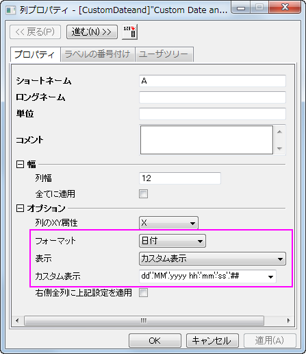
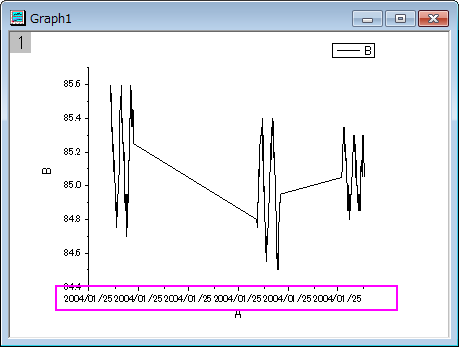
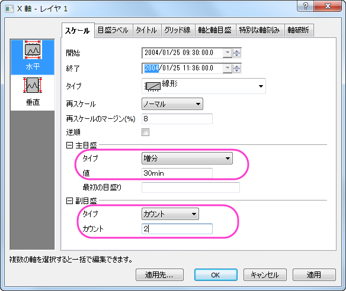
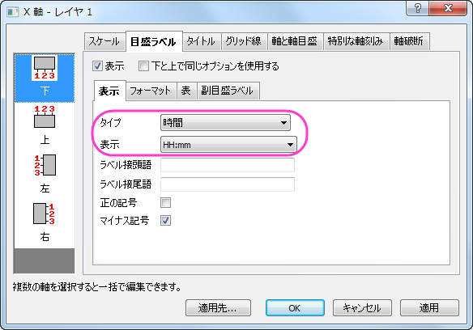

日時データのグラフ作図とカスタマイズ
CustomizeTickLabel-DateTime
サマリー
このチュートリアルは表示フォーマットを日時データに変更する方法とグラフ上でのカスタマイズについて示します。

必要なOriginのバージョン: Origin 2015 SR0以降
学習する項目
- 日時データでグラフを作図する
- 軸目盛ラベルの表示フォーマットをカスタマイズする
ステップ
- Originで新しいプロジェクトを開始します。そして、OriginのプログラムフォルダのSample\Import and Export\Custom Date and Time.dat をインポートします。
- A(X)をダブルクリックして列プロパティダイアログを開きます。プロパティタブのオプションブランチで、列のデータ型に日付、表示にカスタム表示を選択します。カスタム表示のボックスには、dd'.'MM'.'yyyy hh':'mm':'ss'.'## と入力します。
- 
- OK ボタンをクリックして、ワークシートに戻ります。列Bを選択してメニューから作図：基本の2Dグラフ：折れ線と操作し、グラフを作成します。X軸の目盛ラベルが全て同じであることが確認できます。これは、Xデータはすべて同じ日付のものであるのに、ラベルとして日付のみが使用されているからです。ラベルに時間を表示するためにフォーマットを変更します。
- 
- X軸をダブルクリックして（または、フォーマット：軸目盛のラベル：X軸目盛とメインメニューから操作）、X軸ダイアログを開きます。スケールタブで水平アイコンを選択し、次のように設定します。
- 
- 目盛ラベルタブを開き、下アイコンを選びタイプを時間にし、表示フォーマットは、hh:mm にします。
- 
- OKボタンをクリックします。OKボタンをクリックすると目盛りラベルが対応する位置に配置されます。